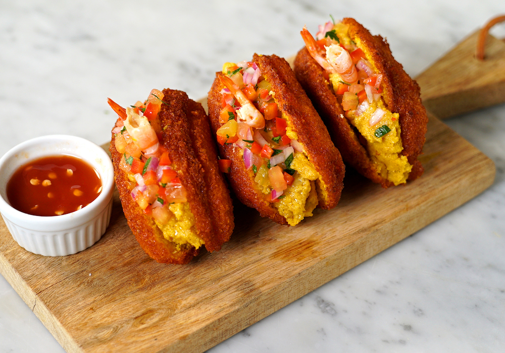
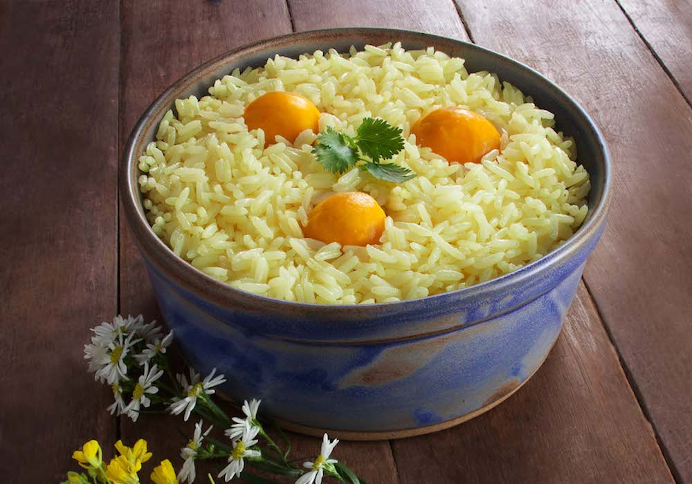

Published on June 20, 2021
Line Hight
―
―
―
|
Text Size
―
―
―
|
What is typical Brazilian food? This may be a question you've asked yourself at some point. After all, Brazil is a country of continental proportions and with such a varied gastronomy, it is indeed difficult to objectively define an answer to this question.
This is because there are many different styles arising from the cultural influences Brazil received throughout its social formation. Brazilian cuisine is as diverse as its people. With strong indigenous and African contributions, and the influence of colonization and immigrant populations, it couldn't have been any different.
Each region of Brazil offers different gastronomic experiences due to the use of regional elements and ingredients, which add different flavors and colors to their dishes. The creativity of Brazilians in the kitchen turns even the simplest foods into true icons in the world gastronomy.
Typical foods of the Southeast
Each corner of Brazil has its peculiarities, traditions and customs. And when it comes to the cuisine, diversity also comes into play in the typical Brazilian foods and beverages. Let's start our gastronomic tour in the Southeast region.
Pão de queijo
There is no way to go to Minas Gerais and not taste its pão de queijo (cheese bread). Pão de queijo is one of the greatest symbols of Minas Gerais cuisine and there is no shortage of candidates for this position, such is the wealth of gastronomy in Minas Gerais. However, the cheese bread wins because of its versatility, being a food for any time, especially accompanied by some coffee.
Despite the name “bread”, this delicacy does not contain wheat flour but tapioca flour, which comes from the cassava root vegetable. History tells us that this recipe emerged on farms in Minas Gerais in an attempt to replace wheat flour in some dishes, at a time when access to this product was scarce.
Feijoada
Among the typical foods of Brazil, feijoada is undoubtedly the most famous – not only throughout the country, but also abroad. The history of this typical dish goes back to the era of slavery, when slaves were fed foods that were not consumed by the masters, which gave rise to feijoada.
This dish is made from a mixture of black beans with different parts of the pig, such as the foot, tail and ears, as well as dried meat and sausage. When served, the feijoada is accompanied by rice, cabbage and farinha.
Moqueca capixaba
This is a typical dish from the state of Espírito Santo, but it is famous throughout Brazil. Moqueca capixaba consists of cooked fish, with vegetables and seafood. It can be made with several types of fish, such as sea bass or dorado, but what cannot change in the preparation is the use of the clay pot, which brings with it a lot of tradition.
Typical foods of the Northeast
The Northeast region is not only rich in its traditions, dances and natural beauty. Northeastern cuisine is full of striking colors and flavors, which pleases the most demanding palates.
Acarajé
Acarajé is a typical dish of Bahia, made by Bahian traditions in their stalls on the street. It is a typical Brazilian food that also recalls the African heritage that Brazil has, which today enchants locals as well as tourists who pass by.
Acarajé is a black-eyed bean dumpling, fried in palm oil and stuffed with vatapá (another typical dish from the Northeast), dried shrimp and vinaigrette, in addition to hot pepper. With this last one you have to be careful, because in Bahia a spicy dish is really spicy.
When asked if you want the acarajé hot or cold, be aware that “hot” means spicy and not the temperature of the dish. If you're not used to it, leave the hot pepper aside.
Carne de sol
Carne de sol is part of several dishes in the northeastern cuisine, being very traditional in this part of the country. It is tender bovine meat, which undergoes a salting process.
This traditional Brazilian food takes its name because, in the past, it was placed to dry in the sun, starting the process called “cura”. Nowadays, its preparation has become more modern and the meat is no longer taken to the sun, but to a refrigerated area. Carne de sol can be used in dishes such as baião de dois and feijoada, as well as served with green beans, grilled cheese and fried cassava.
Tapioca
Tapioca has an indigenous origin, but over time it has spread throughout the region to the point of being recognized as a typical Brazilian dish in the Northeast. Its origin comes from the granulated cassava starch, which, when heated, sticks together and forms a kind of pancake.
It has become very famous in recent years for being a great bread substitute for those who are gluten intolerant. Its versatility is also a contributor to its success, as it can be filled with savory foods such as shredded chicken, turkey breast and cheese, as well as sweet foods such as nutella or caramel.
Typical foods of the North
The north of the country, in addition to its beautiful landscapes and history, also has its gastronomy as one of the strong suits that is part of many tourist's itinerary. The recipes and forms of preparation follow traditions of ancient tribes, such as the Indians and also the Europeans. The result is delicious food that you won't find anywhere else in the world.
Açaí
Upon arriving in the North of Brazil, the gastronomic tour will commence with the famous açaí. This fruit is consumed in different ways throughout the country. In this part of Brazil, it is a typical food and is present in the daily meals of the northerners. Açaí is found everywhere, such as in restaurants, bars, kiosks and stalls.
In several places in the country, açaí is consumed in the form of desserts and juices, but in the North it is served with shrimp and fried fish, as well as cassava flour. Best of all, this purple berry is great for your health, as it has vitamins, phosphorus, calcium and iron, among other properties.
Pato no tucupi
Pato no tucupi is a typical dish from the state of Pará made of roast duck and includes regional ingredients such as tucupi (yellow broth extracted from wild manioc root, a technique of indigenous wisdom) and jambu leaf, which causes a slight numbness in the mouth when consumed. A tradition from Pará is to eat pato no tucupi on the day of Círio de Nazaré, a religious festival that takes place in Belém in October.
It is originally an indigenous recipe, which used tucupi to prepare wild ducks, roasting them in stone stoves. A curiosity here is that tucupi is initially poisonous, it has to be boiled slowly for many hours so that it loses all its hydrocyanic acid.
Tacacá
Tacacá is a traditional dish from the Amazon region and is a famous street food in the states of Pará and Amazonas. This delicacy is also made with tucupi and jambu, with the addition of dried shrimp, chicory, tapioca starch, in addition to various spices such as aromatic chili pepper, garlic and cilantro. Even on hot days, the heavy broth is consumed very hot.
Tacacá is also a delicacy of indigenous origin, which is part of the typical Brazilian foods, and very famous throughout the north of the country.
Typical foods of the Midwest
We arrived at the typical Brazilian cuisine of the Midwest. The local gastronomy is also included in the list of regions with cultures with a unique gastronomy full of flavor. When visiting this corner of Brazil, be sure to take the time to stop at a good restaurant and taste the best of midwestern cuisine.
Pamonha
If you haven't enjoyed this typical dish yet, you don't know what you're missing. In addition to the Midwest, pamonha is very popular in several states, such as Minas Gerais and São Paulo.
With indigenous origin, the recipe is based on corn, which is grated and mixed with milk, butter, salt or sugar. After turning a homogeneous mass, it is cooked in a cauldron of water until it becomes consistent. Pamonha is one of the tastiest typical Brazilian dishes.
Arroz com pequi
Pequi is a native fruit of the savanna-like environment of the Midwest with a remarkable and peculiar taste. It is considered the culinary jewel of the Midwest, being the ingredient for many traditional recipes in the region. One of them is the famous rice with pequi, which is widely consumed in the daily lives of local residents.
Pequi is very aromatic, caloric and with a slightly sweet taste. Maybe the bittersweet flavor is not your thing, but you should definitely give it a try. The dish basically consists of a normal rice, but cooked together with the pequi. This gives the rice a yellow color, in addition to the very characteristic flavor and smell.
Caldo de piranha
The fish that causes fear to so many people also serves as the basis for a delicious broth typical of the region. As it is a very abundant fish in the rivers of the Pantanal, it ends up being a permanent feature in the routine meals of the local population and delights tourists for being very tasty and also for its aphrodisiac properties.
It is usually made with the meat of the piranha beaten and mixed with onions and bell pepper. Seasoned with garlic, salt and paprika, the broth also contains herbs such as bay leaves, basil and chilli pepper. It is commonly served as a starter, accompanied by toast.
Typical foods of the South
With European influences, the southern cuisine is attractive to all tastes. Many of its typical dishes follow ancient recipes, preserving the originality of its ancestors. The best part is that the cuisine of the South of Brazil has a reference from various countries of the European continent, guaranteeing a lot of diversity.
Churrasco
Barbecue is perhaps the best known dish in Rio Grande do Sul. There is no one who has never heard of the Gaucho barbecue. They really are experts when it comes to meat.
It is believed that the origin of this tradition dates back to the mid-17th century, when cattle was abundant in the region, of which the most valued part was the leather. Thus, beef became one of the main components of the diet of the people of that region, who developed the best techniques to prepare it.
Pinhão
For those who have not yet eaten pine nuts, on their trip through the south of the country, this dish cannot be left out of the list of Brazilian foods. Pinhão is a seed of an araucaria angustifolia tree and, in the past, was the main food of indigenous tribes.
One of the ways to enjoy this traditional food is to cook the fruit with a little salt. It is also used in recipes such as risotto, farofa and cakes, among others.
Arroz carreteiro
This rice dish originated in the state of Rio Grande do Sul and has its name because the recipe was made by carreteiros (truck drivers) who took rice, charque (similar to dried meat, but with a higher salt content), onion, salt and an iron pot for its preparation. Currently, the dish can also be made with ground meat and barbecue leftovers, which is a great way to avoid waste.
Line Hight
―
―
―
|
Text Size
―
―
―
|